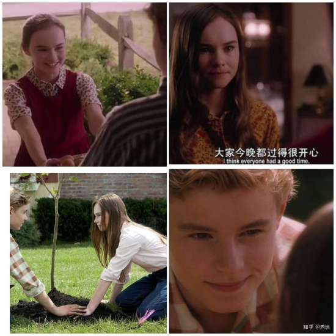
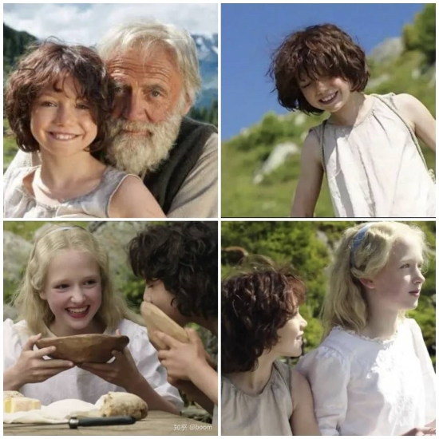

2021.12.8
《怦然心动》布莱斯&朱莉
好好看！我一直觉得自己对爱情片无感，但是现在真的是真香了。因为有人跟我说，他觉得它是最好看的青春爱情片。
男主真的是追妻火葬场啊，不过他是真的帅，女主的哥哥们也好帅！
我觉得无花果树就是他们爱情的信物吧。
斯人若彩虹，遇上方知有。

2022.3.5
这部电影真的好治愈，海蒂的天真烂漫真的好珍贵。谁不向往没有束缚的生活呢。
想起小时候我也去山里放过牛，去地里摘过野花野草，去河里抓过鱼，无忧无虑，真的是一心只想着玩。
最后海蒂开始书写自己的故事，她所见到的美好。